Staanplekke
R480 / nagGroot staanplekke vir woonwaens en tente, meeste op gras, onder groot koelte bome naby die rivier.
- 4 persone ingesluit
- Maks 6
- Krag
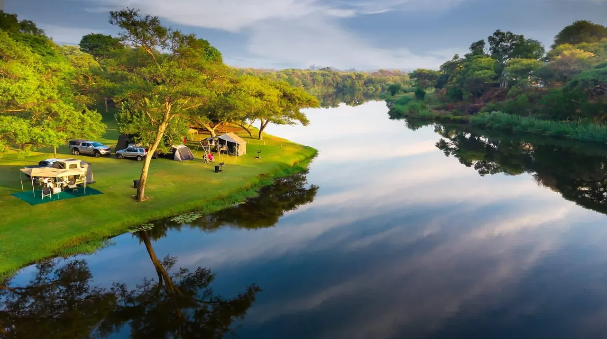
Privaat karavaanpark op die oewer van die Olifantsrivier, 13 km van Loskopdam. Rus so bietjie, dis goed vir die siel.
Die beste sal wees om te kom kuier. Sien self die *sonsondergang*, ruik die vars *boslug*, skiet wild met jou *kamera*, kuier met vriende om die *kampvuur*, stap op die *voetslaanpad*, vang daai *vis* wat nog altyd weggekom het, luister na die *voëls* se praatjies en laat die *kinders* speel.
Rus so bietjie, dis goed vir die siel.

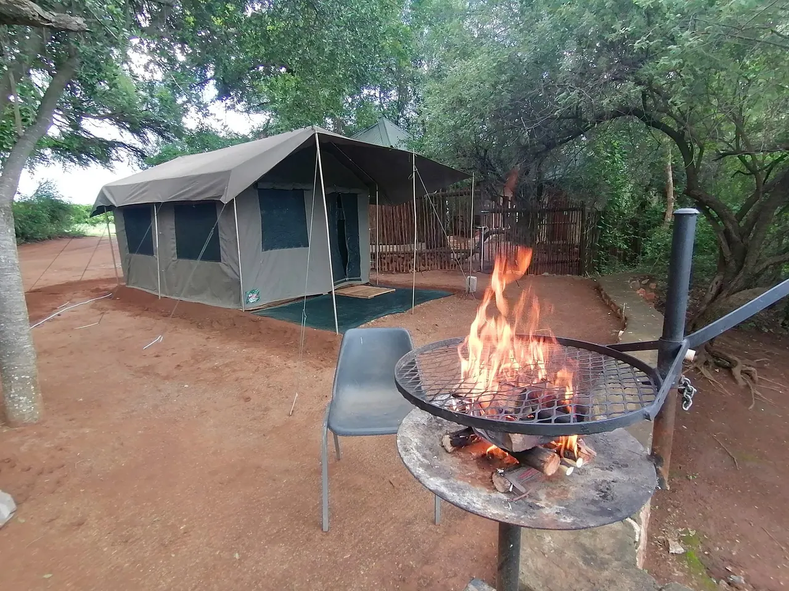
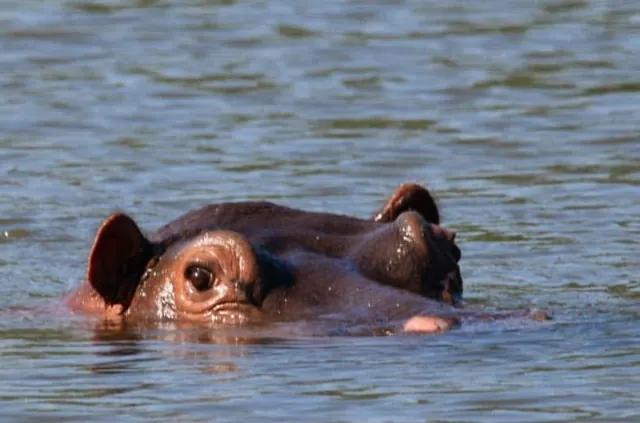
Groot staanplekke vir woonwaens en tente, meeste op gras, onder groot koelte bome naby die rivier.
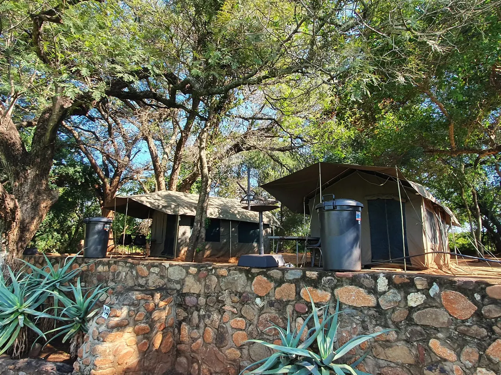
Ons nuutste toevoeging. Twee enkelbeddens, LED-lig en krag, eie braai, stoele en 'n tafeltjie. Bring net jou beddegoed.
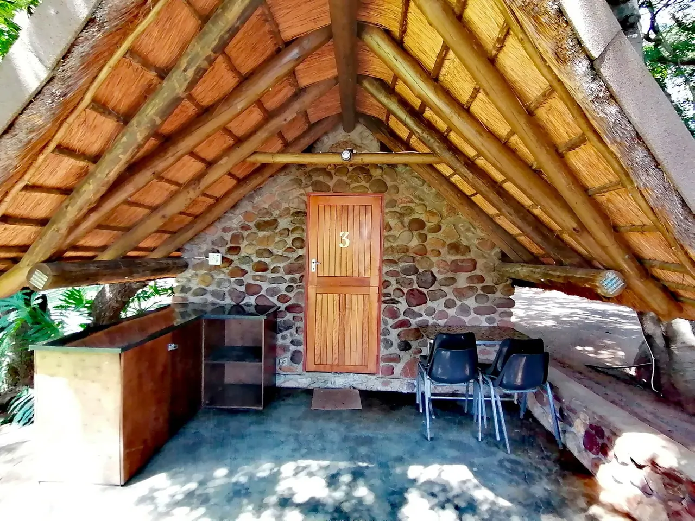
Selfsorg-huisies van klip en grasdak. Tot vier persone wat twee driekwartbeddens deel, met gedeelde ablusie.

Afgesonderde grasperk en bos reg op die rivier, tot tien staanplekke. Huur die hele kamp vir 'n groep of klub.
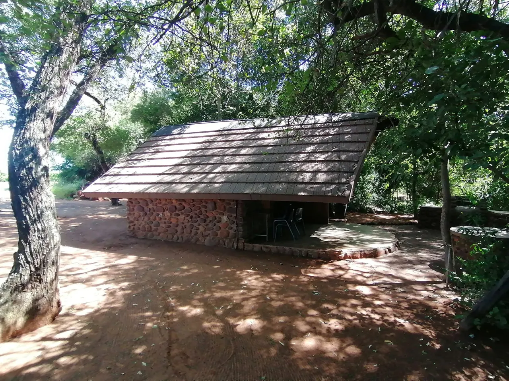
Plek vir tot twee karavane op die terras, naby genoeg aan staanplekke 1 en 2. Lekker vir families wat saam kom.

Stil en ongerep, sonder krag. Slegs vier staanplekke, net vir groepe. Of bespreek die hele naweek vir R3 500.
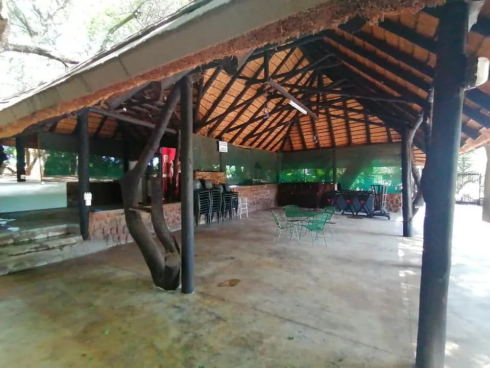
Die lapa vir tot 20 gaste, of die hele terrein vir 'n saamtrek of 'n bos troue. "Iets anders".
Stuur vir Sam 'n WhatsApp vir hulp met die regte staanplek vir jou groep.
WhatsApp vir SamVan die oewer af hengel, voëls afmerk, die voetslaanpad stap of net by die swembad lê. Hier is genoeg om te doen, en genoeg om niks te doen nie.
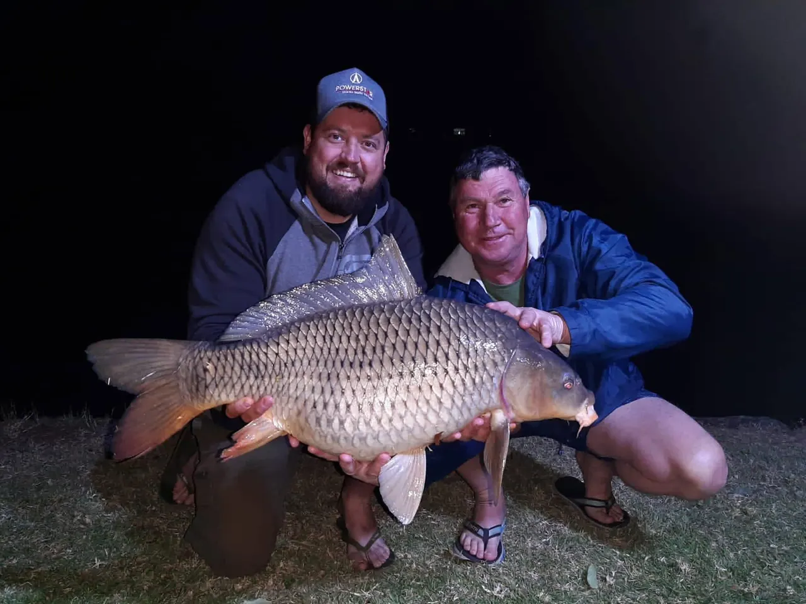
Karp, geelvis en kurper in die Olifantsrivier. Vang daai vis wat nog altyd weggekom het.
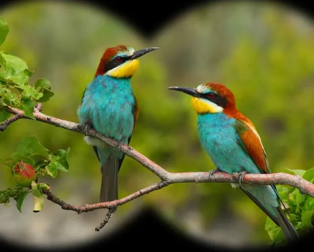
Danksy BirdLife South Africa het ons 'n lys van spesies wat hier afgemerk is. Laai die voëllys af.
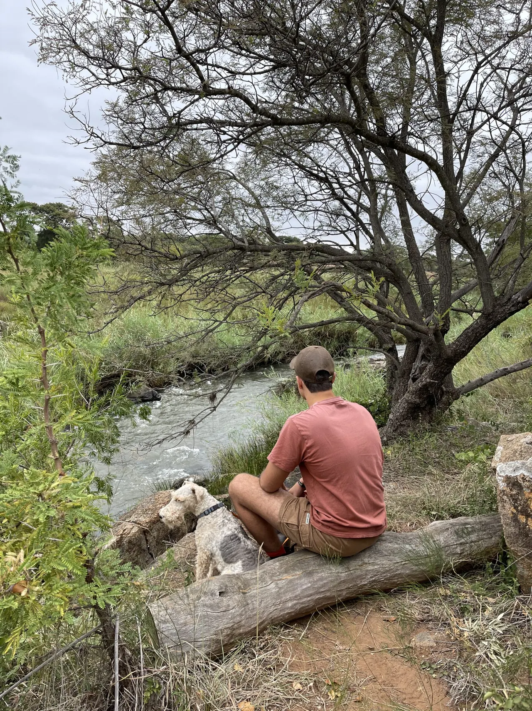
Stap deur die bos en langs die stroompie, met jou kamera gereed vir wild.
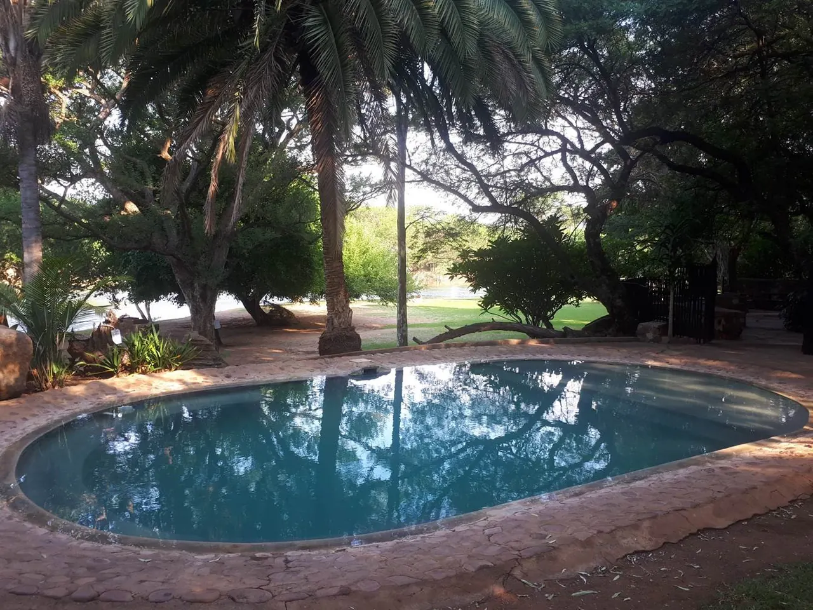
Koel af in die middag hitte. Geen glas by die swembad nie.
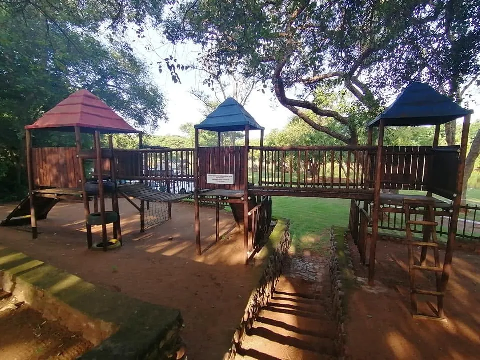
Jungle gym, trampoliens en baie gras om op rond te hardloop.
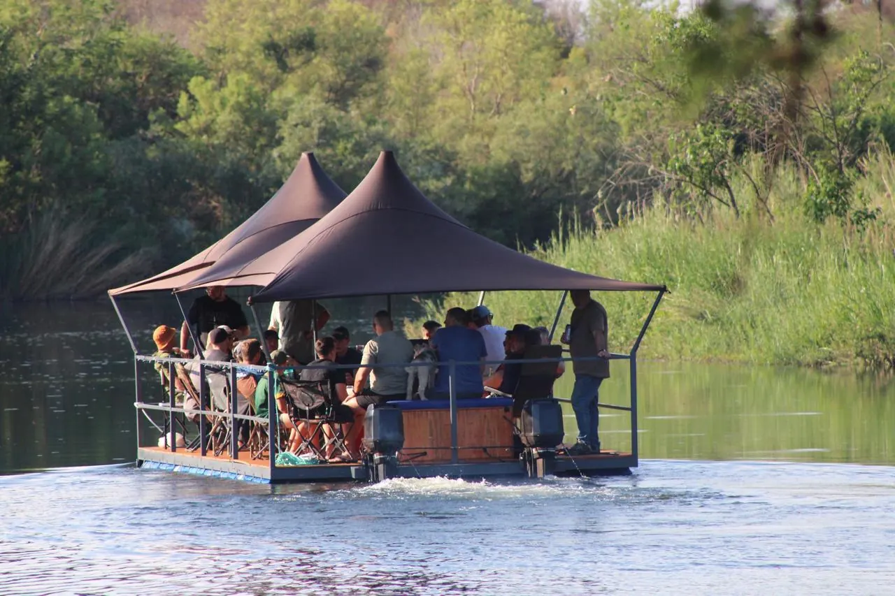
Rivier plesierritte, wildritte en 4x4-roetes. Vra by die kantoor.
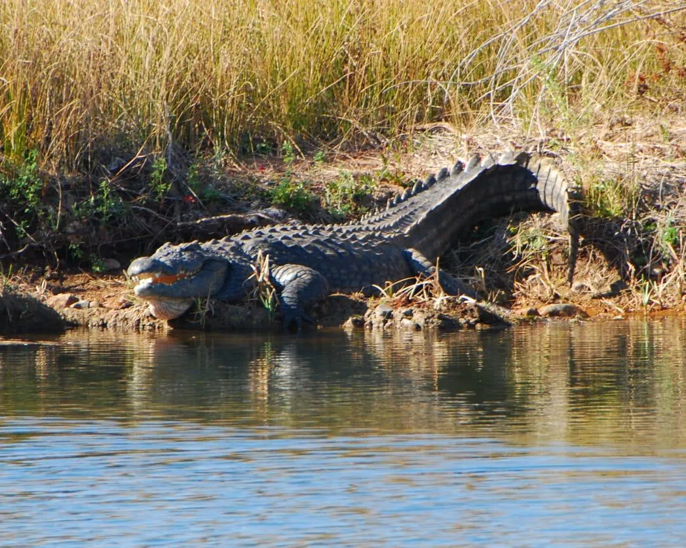
Die rivier is 'n swem verbode area. Geniet hulle van die oewer af, hou kinders onder toesig en hou die terrein skoon.

Braaihout en ys is te koop by die kantoor. Die res, die stories en die sterre, bring jy saam.
“Wat 'n lieflike plek! Die terrein word pragtig onderhou, dis netjies met vriendelike personeel.”
Gas, Facebook-resensie“Baie lekker daar en dis rustig en baie skoon. Die naggeluide is natuurlik vir my die mooiste.”
Gas, Facebook-resensie“Wat 'n lekker rustige plek. Alles was netjies en skoon. Die diens was goed.”
Gas, Facebook-resensieGeldig van 1 Mei 2026 tot 31 Maart 2027. Kinders onder 3 bly gratis.
Op die Olifantsrivier, met die ingang vanaf die N11 tussen Groblersdal en Loskopdam.
Vul die besonderhede in en stuur dit direk via WhatsApp of e-pos. Ons bevestig beskikbaarheid en stuur die bankbesonderhede vir die deposito.